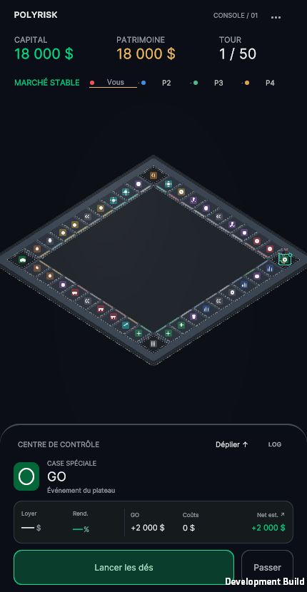
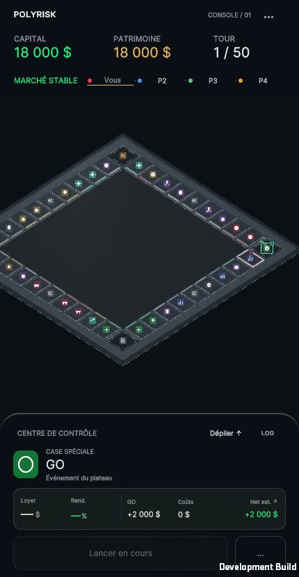
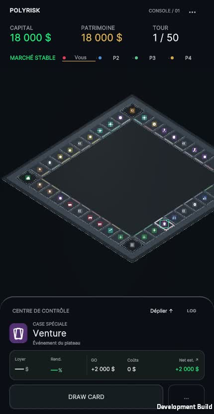
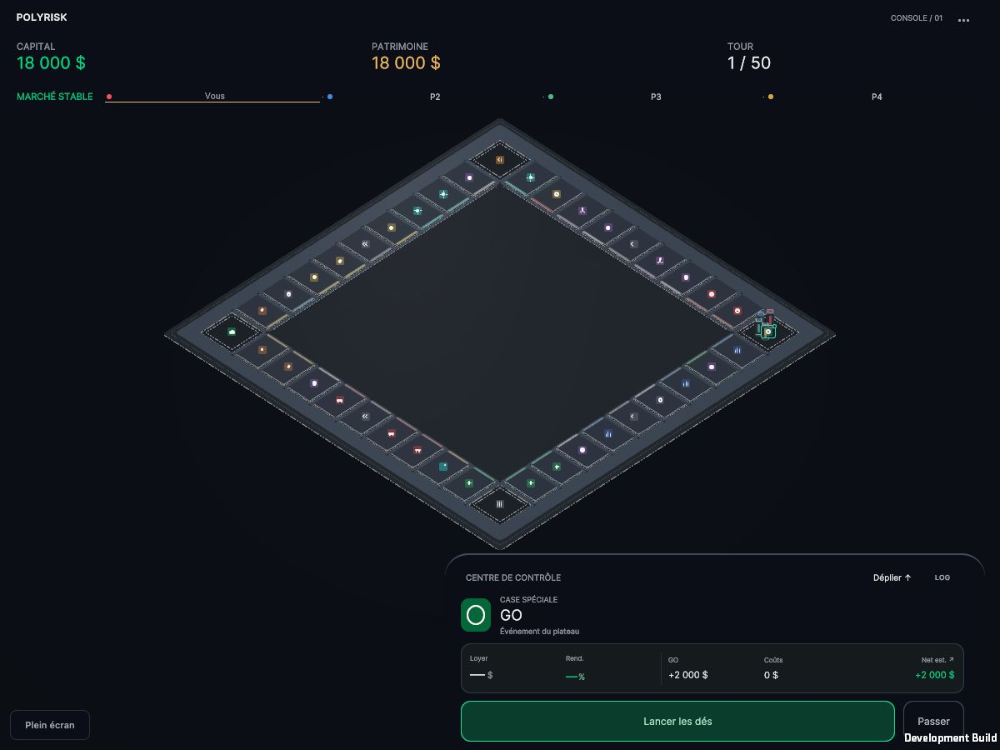
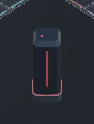
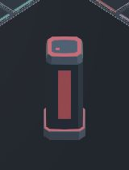

430 × 830 — avant / après, quatre occupants sur GO


Rapport, paramètres et limites · Prototype WebGL
Rendu Unity réel, pistes audio enregistrées depuis la sortie WebAudio du jeu. Aucun microphone, aucune image générée. Les parcours du banc visuel utilisent le prefab et PawnMovement réels sans actions économiques.
Le banc commence par 40 positions rapides de contrôle, puis 1 à 6 occupants. Ces sauts de test ne représentent pas le déplacement normal. Viennent ensuite repos / activation / émission coupée, parcours courts et longs, cadence ralentie et Reduced Motion.





Spécimen QA déclaré : même géométrie / matériaux, grossissement ×5 au centre pour inspection uniquement. La caméra de jeu reste inchangée ; les captures natives ci-dessus servent à juger la visibilité réelle.

